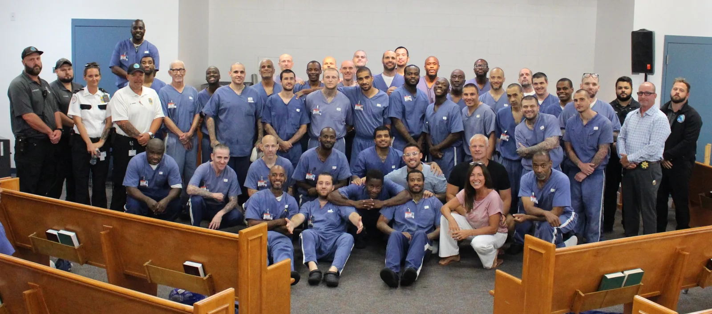
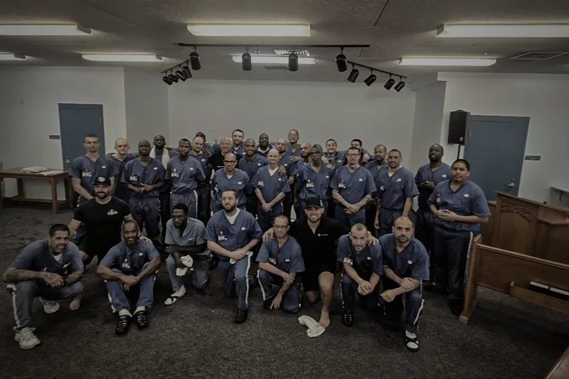
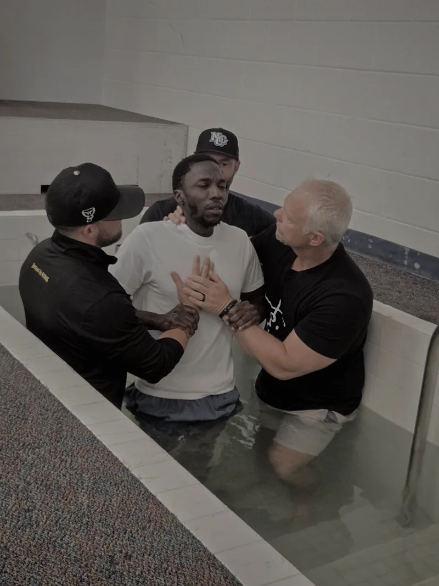
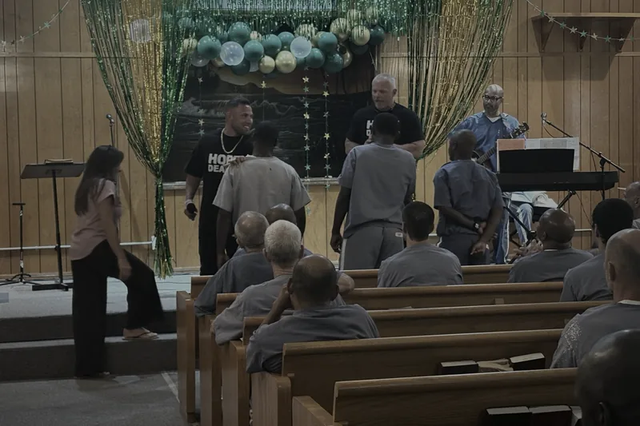
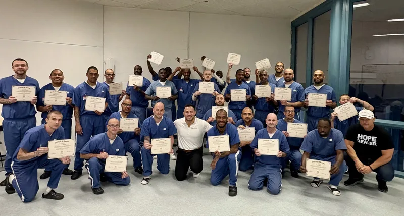
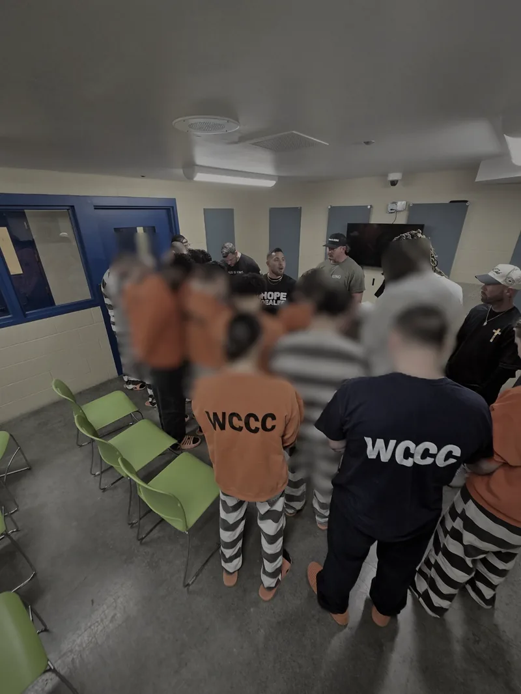
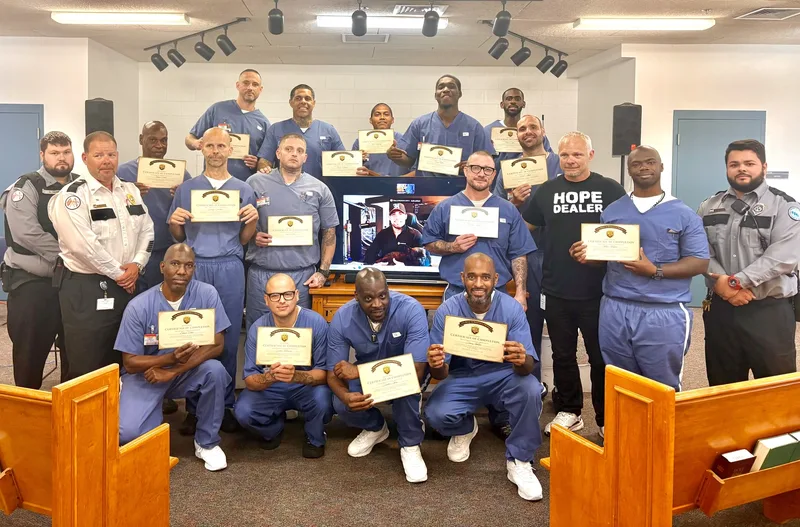
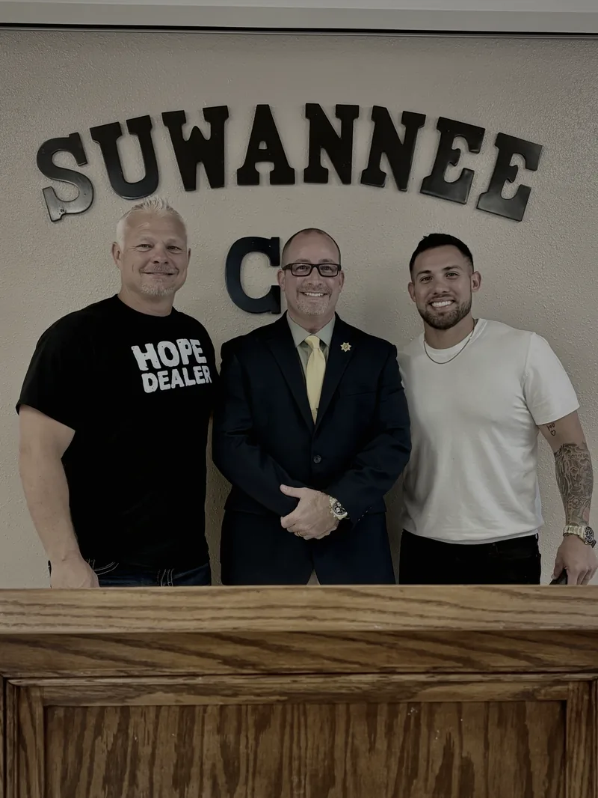
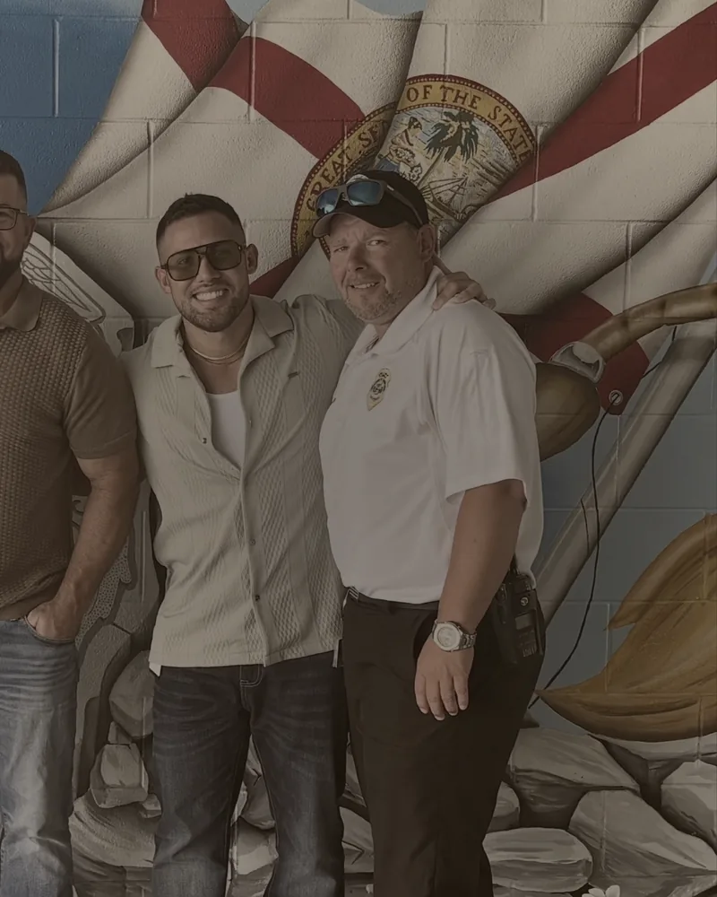

70
Lancaster Correctional RevivalLancaster, FL
70 men activated in prayer.

We take the light of Jesus into prisons and jails — the places nobody is clapping, because we have freely received, so we freely give.
"And the King will answer them, 'Truly, I say to you, as you did it to one of the least of these my brothers, you did it to me.'"Matthew 25:40
02 — Field report
70
70 men activated in prayer.
38
At Suwannee Correctional Facility, 38 youths received Jesus and an inmate from the RTD program was able to share his testimony with them.
72
39 more men just went under the water at Suwannee — 72 total baptisms and counting. 10 Muslims among them have given their lives to Jesus.
9.23
Next baptism service is on the calendar — a dedicated day for youthful offenders at Suwannee to publicly declare their faith.
2
Our first RTD class graduated. The second is days away — and the State of Florida transferred an inmate in from another prison specifically to go through the program with us.
96
96 salvations. 3 services. Everyone received Jesus in each service!
03 — Road to Damascus
Road to Damascus — the RTD Program — is our 12-week discipleship intensive inside the walls. Inner healing. Renewal of the mind. Spiritual development. Real relationship with Jesus, worked out in real time with men who are ready to change.
It isn't a study group. It's a container for transformation — where a man can be honest about what shaped him, get free of what's been running him, and learn to walk with God from the inside out.
God is moving.
We graduated our first RTD class — and we're days away from graduating the second.
Even more remarkable: the State of Florida transferred an inmate in from another prison specifically to go through the RTD Program with us. When the state moves a man across the system to sit in your class, that's not us. That's God.


04 — Books behind the walls
Behind the walls, we put free physical copies of Frank Ortega's books into the hands of the men — an actual paperback they can hold, mark up, and pass to the next man on the cell block. This isn't a giveaway for site visitors; it's paid for by people who sow, and delivered straight to inmates.
$11 covers the print cost of one book AND getting it distributed inside the facility. Tap Sow a Seed, then choose the “Books” designation — not general giving — and your $11 puts one book directly in an inmate's hands.





05 — Doors are opening
Prisons don't hand out access. It's earned — through consistency, integrity, and the fruit that follows real ministry. When the Warden of Suwannee Correctional Institution invites you into his office, that's a door only God can open.
That access is why the RTD Program exists inside these walls. It's why the State of Florida trusts us to disciple men across the system. And it's why every dollar sown here goes further than it would anywhere else.
06 — Seat of honor
The man who opened the door.
Lieutenant Harris is the head of the CMTI program at Suwannee Correctional Institution, and he is the reason MOG Ministries is inside those walls running the Road to Damascus Program. He didn't just approve us — he championed us.
He serves selflessly. He goes above and beyond to make sure the men in his care have a real shot at inner healing and a genuine relationship with Jesus Christ. Every graduation, every baptism, every transferred inmate who walks into RTD — it flows through the door Lt. Harris held open.
We honor him. We thank God for him. And we're believing for more leaders like him across the system.

07 — Free audio books
A free resource for anyone visiting the site — press play and take it with you. Physical paperbacks are reserved for the men behind the walls, funded by people who sow.
February 2, 2026 · Audio Books
Frank Ortega's newest book release, read in full.
Play audioJanuary 16, 2026 · Audio Books
Full audio book — a no B.S guide to a powerful prayer life.
Play audioHope Dealers
Bring the light of Jesus into places most people avoid. Partner monthly and help us keep showing up behind the walls.